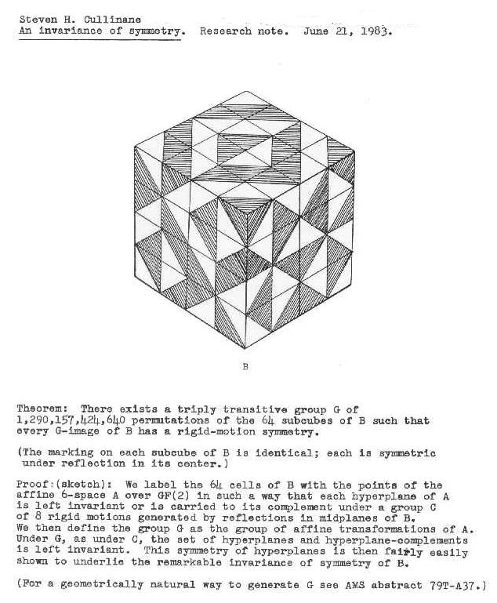
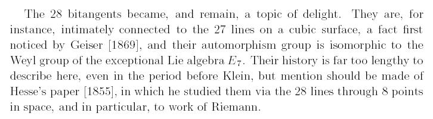
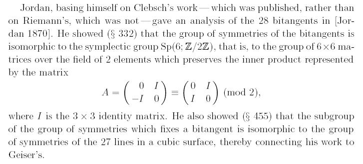
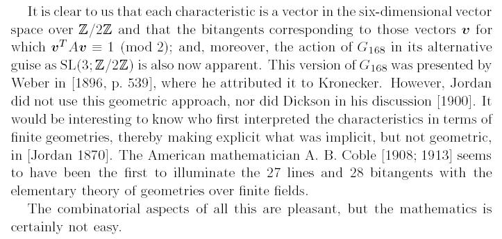
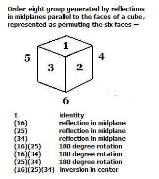

| Finite
Geometry
Notes |
Solomon's Cube
by Steven H. Cullinane
on May 28, 2003
(Last modified March 3, 2010)
In 1998, the Mathematical Sciences Research Institute at Berkeley published a book, The Eightfold Way, inspired by a new sculpture at the Institute. This note describes another sculpture embodying some of the same concepts in a different guise.
The Eightfold Way deals with Klein's quartic, which, like all non-singular quartic curves, has 28 bitangents. The relationship of the 28 bitangents to the 27 lines of a " Solomon's seal" in a cubic surface is sketched at the Mathworld encyclopedia. For more details, see the excerpt below, from Jeremy Gray's paper in The Eightfold Way.
Both the 28 bitangents and the 27 lines may be
represented within the 63-point space
The space PG(5,2) also contains a representation of the
Klein quadric (as opposed to the Klein quartic discussed
in The Eightfold Way). This representation, obtained via
the Klein correspondence, may be used to construct the Mathieu
group M24. See The Klein
Correspondence, Penrose Space-Time, and a Finite Model.
Group actions on the 63 points of the finite projective
space

The theorem may be verified by manipulating a JavaScript version of the cube.
Those who like to associate mathematical with religious entities may contemplate the above in the light of the 1931 Charles Williams novel Many Dimensions. Instead of Solomon's seal, this book describes Solomon's cube.
From
a
review: "Imagine 'Raiders of the Lost Ark' set in 20th-century
London, and then imagine it written by a man steeped not in Hollywood
movies but in Dante and the things of the spirit, and you might begin
to get a picture of Charles Williams's novel Many Dimensions."
From
The Eightfold Way,
a
publication
of
the
Mathematical Sciences Research
Institute
(MSRI Publications Vol. 35, 1998):
From the History of a Simple Group
by Jeremy Gray
Excerpt:



"Art isn't easy." -- Stephen Sondheim
For more on this theme, see
ART WARS: Geometry as Conceptual Art.
For more about the group "G168
in its
alternative guise as SL(3; Z/2Z)," see
The Eightfold Cube,
A Simple
Reflection Group of Order 168,
and the following--
|
Update of March 3, 2010 Plato's Ghost
Jeremy Gray, Plato's Ghost: The Modernist Transformation of Mathematics, Princeton, 2008– "Here, modernism is defined as an autonomous body of ideas, having little or no outward reference, placing considerable emphasis on formal aspects of the work and maintaining a complicated— indeed, anxious— rather than a naïve relationship with the day-to-day world, which is the de facto view of a coherent group of people, such as a professional or discipline-based group that has a high sense of the seriousness and value of what it is trying to achieve. This brisk definition…." Brisk? Consider Caesar's "The die is cast," Gray in "Solomon's Cube," and Symmetry, Automorphisms, and Visual Group Theory– 
This is the group of "8 rigid
motions Related material: "… the action of G168 in its alternative guise as SL(3; Z/2Z) is also now apparent. This version of G168 was presented by Weber in [1896, p. 539],* where he attributed it to Kronecker." – Jeremy Gray, "From the History of a Simple Group," in The Eightfold Way, MSRI Publications, 1998 Here MSRI, an acronym for Mathematical Sciences Research Institute, is pronounced "Misery." See Stephen King, K.C. Cole, and Heinrich Weber. *H. Weber, Lehrbuch der Algebra, Vieweg, Braunschweig, 1896. Reprinted by Chelsea, New York, 1961. |
![presented by Weber in [1896, p. 539],* where he attributed it to Kronecker](solcube_files/100303-Weber537.gif){kind=link}